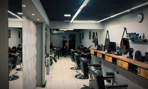
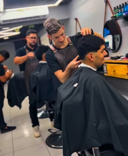

“Excelente! Todos os funcionários são muito profissionais e capacitados desde a recepção ao serviço prestado com excelência…”
Sr. Navalha
Corte, barba e presença.
Do seu jeito, em Gravatá.
O cuidado aparece nos detalhes.
Os nossos estão aqui, de perto.
A escolha é sua.
O cuidado é nosso.
Um corte novo ou aquele de sempre. Abra um serviço e encontre o seu próximo cuidado.
Corte
Forma & identidade
Do clássico ao seu próprio estilo. Um corte pensado junto com você, com atenção ao formato e ao acabamento.
Solicitar um corteBarba
Contorno & cuidado
Comprimento, contorno e os pequenos detalhes que definem o seu visual. Cuidado de perto, do começo ao fim.
Solicitar cuidado de barbaSobrancelha
e acabamento
O toque final
e acabamento
Os detalhes completam o conjunto. Converse com a equipe sobre o acabamento que você procura.
Solicitar acabamentoEntre o espelho
e a conversa.
Um lugar em Gravatá para sentar, conversar e cuidar de você. Essa é a Sr. Navalha.


A técnica está
nas mãos.
A atenção está na conversa. Conte para a equipe o que você tem em mente; o seu estilo é o ponto de partida.
Vamos conversarTrabalho de perto.
Cinco registros, diferentes detalhes.
Escolha um para olhar com calma.
Depois do espelho,
a palavra de quem veio.
5,0
466 avaliações no Google
Registro de 15/10/2026
A gente se encontra
no Prado.
Av. Governador Agamenon Magalhães, 349Prado · Gravatá — PE · 55642-210
- Segunda a sábado
- 08:30 – 18:30
- Domingo
- 09:30 – 14:00
Mapa indisponível? Abra a localização no Google Maps.
Antes de sentar.
Como solicito um horário?
Escolha suas preferências na página de agendamento e envie pelo WhatsApp. A equipe confirma a disponibilidade na conversa.
Posso escolher um profissional?
Você pode indicar uma preferência no contato. A disponibilidade é confirmada diretamente com a equipe.
Vocês atendem crianças?
Entre em contato com a barbearia para confirmar o atendimento e as condições para cada idade.
Como remarco ou cancelo?
Converse com a equipe pelo mesmo canal usado para solicitar o horário.
Um tempo
para você.
Conte o que você procura.
A gente combina o próximo cuidado.